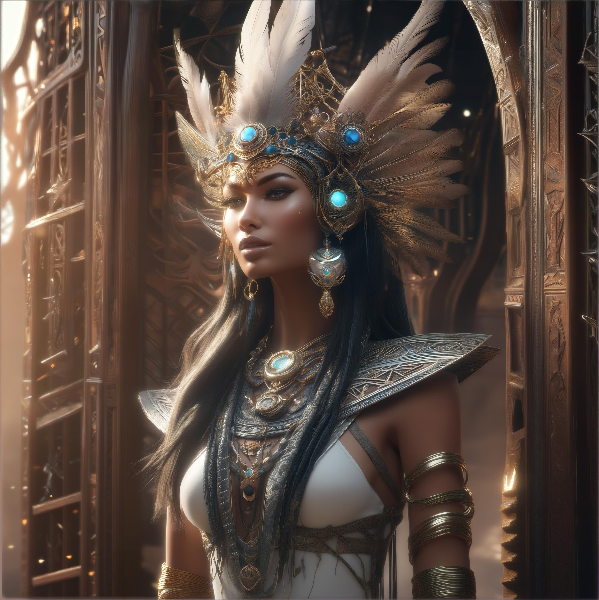
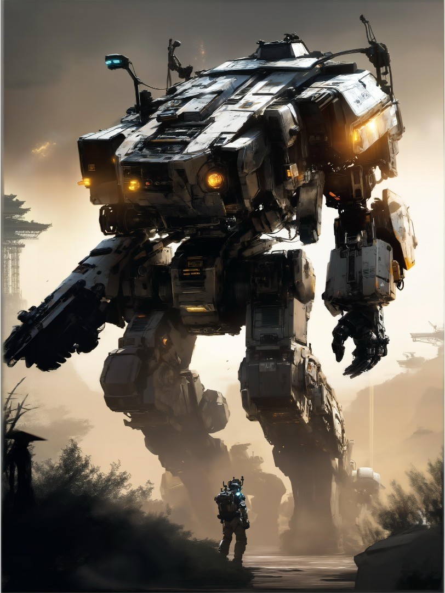
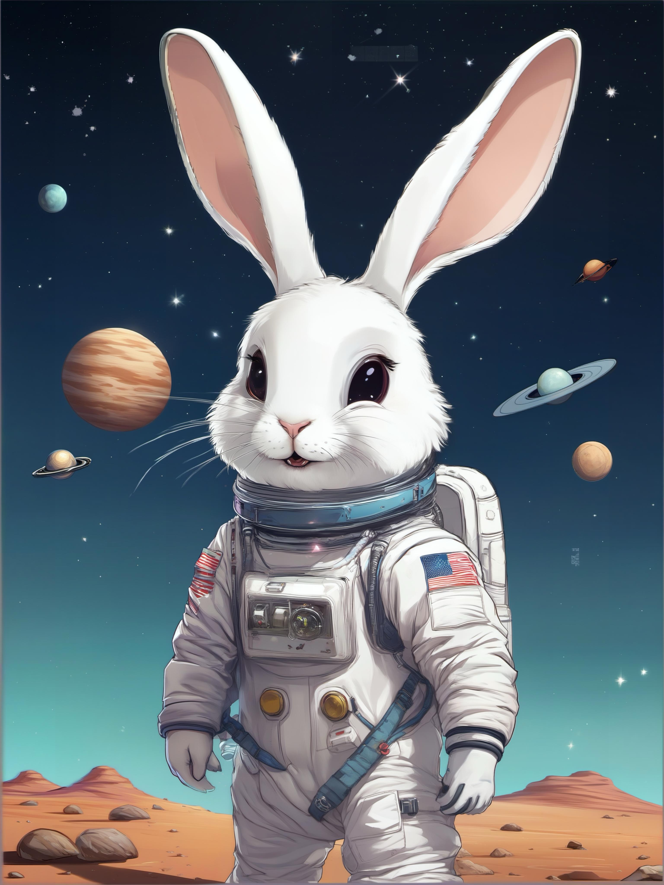
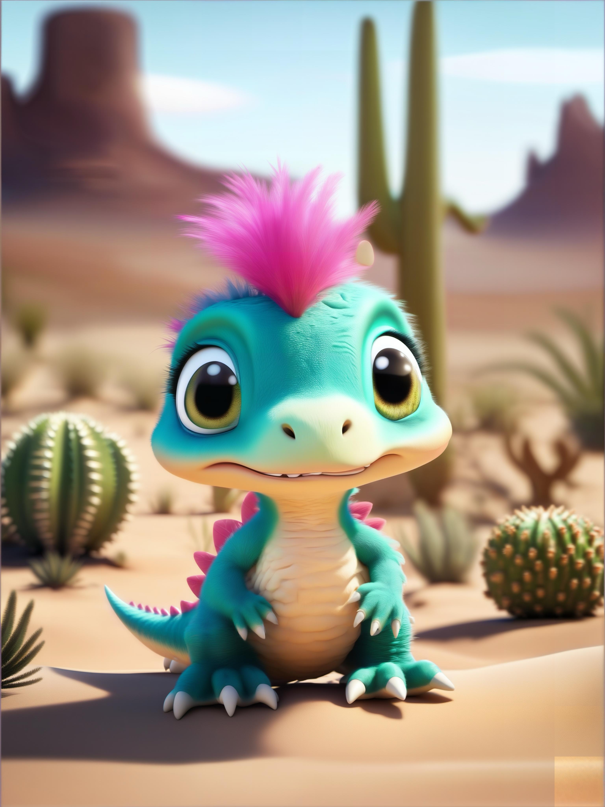

A car made out of vegetables.
4 k 8 k photorealistic torso headshot portrait of elegant asuka langley in red - white tight fit
contact suit reflective by james jean, zac retz, pixiv.

a mystical tribal goddess adorned with feathers and gemstones and cables and synthesizer
parts is surrounded by sacred geometry made from elven architecture, full body, gorgeous,
perfect face, powerful, cinematic, beautifully lit, by artgerm, by karol bak, 3 d, trending on
artstation, octane render, 8 k
A cute teddy bear in front of a plain white wall, warm and brown fur, soft and fluffy.
mkitdecy, sad rusty decayed broken flower, deep shadows, high quality, high resolution,
cinematic, dark.

titanfall mech standing with its human pilot, dramatic lighting, illustration by greg rutkowski,
yoji shinkawa, 4 k, digital art, concept art, trending on artstation.

cute rabbit in a spacesuit

an adorable and fluffy baby dinosaur with big color eyes, with soft feathers and wings, in
the desert with cactus, with blur background, high quality, 8k

a melting apple.

A transparent sculpture of a duck made out of glass. The sculpture is in front of a painting
of a landscape.